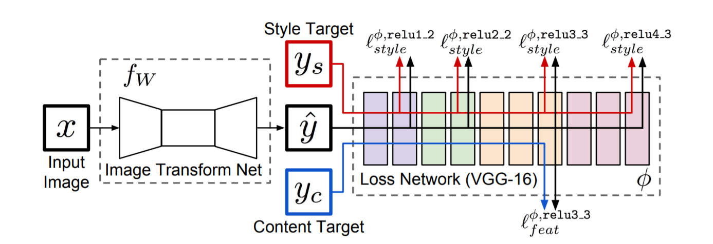

fast-style-transfer
论文“精”读👏
Paper: Perceptual Losses for Real-Time Style Transfer and Super-Resolution
Abstract
针对 style-transfer 问题，最近的方式是：使用一个 per-pixel 的损失函数，在输出和 ground-truth 之间，训练一个前馈神经网络。平行化的工作已经展示出：高质量的图片可以由定义并优化感知损失函数生成，这个损失函数基于提取于预训练网络的高层次特征。作者将上述两点进行了联合：使用感知损失函数训练前馈神经网络。💥
Introduction
许多经典的问题都可以看作图像转换任务。
一种解决 image transformation tasks 的办法是 train a feedforward convolutional neural network in a supervised manner，使用一个 a per-pixel loss function 测量输出和 ground-truth images 的差异。这种方式是高效的在测试阶段，它只需要在已经训练过的网络上前向计算！
然而，这些方式使用的 per-pixel losses 不能够捕捉到输出和 ground-truth images 之间的感知差异！例如：如果图片 A 是由 B offsets 1 pixel 得到的，尽管他们的感知相似，但是他们在 per-pixel losses 上差异很大！🤣
最近的工作表明：高质量的图片可以由感知损失函数生成，它不是基于 pixel，而是基于使用预训练网络提取的高层图像特征表示之间的差异。Images are generated by minimizing a loss function.
本 paper 联合了上述两种方法：train a feedforward convolutional neural network 和感知损失函数。对于图片转换任务，作者训练了一个前馈转换网络：transformation networks，并没使用 per-pixel losses，而是使用感知损失函数。在训练期间，相比于per-pixel losses，perceptual losses 测量图像相似性鲁棒性更强，在测试阶段，转换网络可以实时运行。
我们在两个任务上进行实验：风格迁移和超分辨率。对于风格迁移，输出必须在语义上和输入相似，尽管颜色和纹理发生的极端变化。
Related Work
Feed-forward image transformation
The architecture of our transformation networks are inspired by **Fully convolutional networks for semantic segmentation. CVPR (2015)**，which use in-network downsampling to reduce the spatial extent of feature maps followed by in-network upsampling to produce the final output image.
Perceptual optimization
很多 paper 从图像卷积后多个不同的 feature map 中提取图像信息
Style Transfer
Gatys 的工作，最初的风格迁移办法
Image super-resolution
略
Method
整个系统由两个部分组成：image transformation network & a loss network
转换网络是一个深层残差卷积神经网络，他将输入图片转换成输出图片，它使用 stochastic gradient descent（SGD） 最小化联合 loss function 进行训练。🎈
Image Transformation Networks
没有使用任何 pooling 层，使用小 stride 卷积实现 downsampling & upsampling（?）
网络主体由 5 个残差 block 组成，其结构如下： http://torch.ch/blog/2016/02/04/resnets.html，所有的非残差卷积层后跟一个 batch Norm 和一个 RELU，除了输出层使用 tanh ensure that the output image has pixels in the range [0, 255]. Other than the first and last layers which use 9 × 9 kernels, all convolutional layers use 3 × 3 kernels. The exact architectures of all our networks can be found in the supplementary material.
Inputs and Outputs.
the input and output are both color images of shape 3 × 256 × 256.
Downsampling and Upsampling
对于风格迁移，网络使用2个 stride=2 的卷积层对输入下采样，之后跟随几个残差 block ，然后使用2个 stride=1/2 的卷积层进行上采样。尽管输入和输出有相同的大小，但是，上、下采样有一定的好处：
computational
After downsampling, we can therefore use a larger network for the same computational cost.
计算量相同的情况下，下采样可以使得卷积核的数目变多，这也就意味着增大了网络的规模。🥳
effective receptive field sizes
After downsampling by a factor of D, each 3×3 convolution instead increases effective receptive field size by 2D, giving larger effective receptive fields with the same number of layers.
下采样增大了卷积核感受野（显然😊）
Residual Connections
The body of our network thus consists of several residual blocks, each of which contains two 3 × 3 convolutional layers. We use the residual block design of [44], shown in the supplementary material.
Perceptual Loss Functions
We define two perceptual loss functions that measure high-level perceptual and semantic differences between images.
定义了两个损失函数：
Feature Reconstruction Loss
The feature reconstruction loss is the (squared, normalized) Euclidean distance between feature representations
feature map 之间的欧式距离，和 Gatys 的一样！
Style Reconstruction Loss
和 Gatys 的一样！